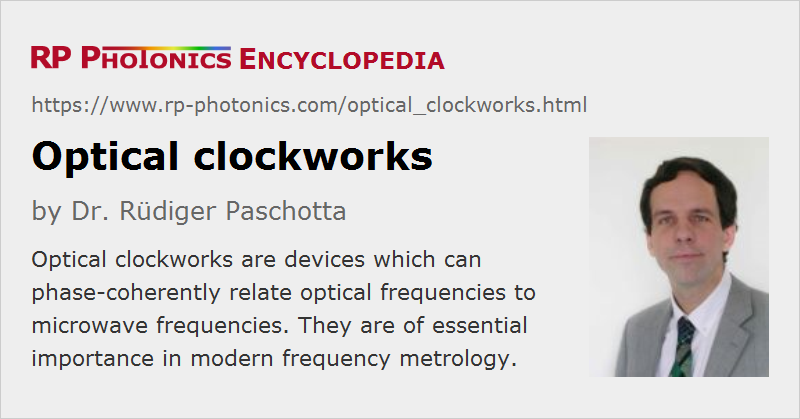

Optical Clockworks
Definition: devices which can phase-coherently relate optical frequencies to microwave frequencies
German: optische Uhrwerke
Categories: photonic devices, optical metrology
How to cite the article; suggest additional literature
Author: Dr. Rüdiger Paschotta
In analogy with a mechanical clockwork, an optical clockwork is a device which phase-coherently relates a high and a low frequency and can serve as a central ingredient of an optical clock. The higher frequency is an optical frequency, i.e., typically in the range of hundreds of terahertz, whereas the lower frequency is typically in the microwave region (e.g. between 1 and 100 GHz), so that it can be processed with fast electronics and easily related to even lower frequencies. An optical clockwork can thus relate an optical frequency standard to an electronic one, the latter being based on, e.g., a cesium atomic clock.
Early optical clockworks have been frequency chains, which involved a complicated combination of many nonlinear stages. Each of these stages related some frequency to a certain multiple of that frequency, often just two times the lower frequency, or with some known frequency offset. Such frequency chains were extremely difficult and expensive to set up.
The advent of very broadband mode-locked lasers has made it possible to realize by far simpler optical clockworks, as the output of such a laser is a frequency comb, where all frequencies occurring are determined by just two parameters: the pulse repetition frequency and the carrier–envelope offset frequency. An optical frequency from some frequency standard (e.g. a single ion in a Paul trap) can then be expressed by the sum of the carrier–envelope offset frequency, a certain integer multiple of the pulse repetition frequency, and a beat note frequency, which can all be measured and processed with fast electronics. It is thus possible to phase-coherently compare the frequencies of the optical standard and a cesium clock and correct the timing signal of the latter, using the superior stability of the optical frequency standard. Figure 1 shows the setup of an optical clock which can be realized in that way. Note that the frequency comb does not necessarily have to be stabilized itself to fulfill its function [3].
See the articles on frequency metrology and frequency combs for more details.
Questions and Comments from Users
Here you can submit questions and comments. As far as they get accepted by the author, they will appear above this paragraph together with the author’s answer. The author will decide on acceptance based on certain criteria. Essentially, the issue must be of sufficiently broad interest.
Please do not enter personal data here; we would otherwise delete it soon. (See also our privacy declaration.) If you wish to receive personal feedback or consultancy from the author, please contact him e.g. via e-mail.
By submitting the information, you give your consent to the potential publication of your inputs on our website according to our rules. (If you later retract your consent, we will delete those inputs.) As your inputs are first reviewed by the author, they may be published with some delay.
Bibliography
| [1] | S. A. Diddams et al., “Direct link between microwave and optical frequencies with a 300 THz femtosecond laser comb”, Phys. Rev. Lett. 82 (18), 3568 (1999), doi:10.1103/PhysRevLett.82.3568 |
| [2] | R. Holzwarth et al., “Optical clockworks and the measurement of laser frequencies with a mode-locked frequency comb”, IEEE J. Quantum Electron. 37 (12), 1493 (2001), doi:10.1109/3.970894 |
| [3] | H. R. Telle et al., “Kerr-lens mode-locked lasers as transfer oscillators for optical frequency measurements”, Appl. Phys. B 74, 1 (2002), doi:10.1007/s003400100735 |
| [4] | S. T. Cundiff and Jun Ye, “Colloquium: Femtosecond optical frequency combs”, Rev. Mod. Phys. 75, 325 (2003), doi:10.1103/RevModPhys.75.325 |
| [5] | J. Ye et al., “Optical frequency combs: from frequency metrology to optical phase control”, J. Sel. Top. Quantum Electron. 9 (4), 1041 (2003), doi:10.1109/JSTQE.2003.819109 |
| [6] | J. E. Stalnaker et al., “Optical-to-microwave frequency comparison with fractional uncertainty of 10−15”, Appl. Phys. B 89, 167 (2008), doi:10.1007/s00340-007-2762-z |
See also: optical frequency standards, optical clocks, frequency metrology, frequency combs
and other articles in the categories photonic devices, optical metrology
|  |
If you like this page, please share the link with your friends and colleagues, e.g. via social media:
These sharing buttons are implemented in a privacy-friendly way!